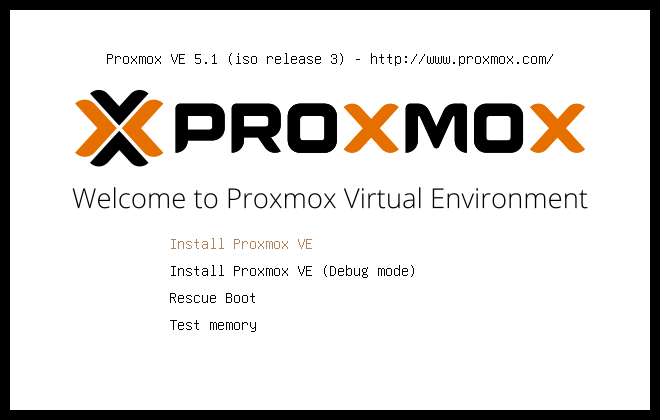
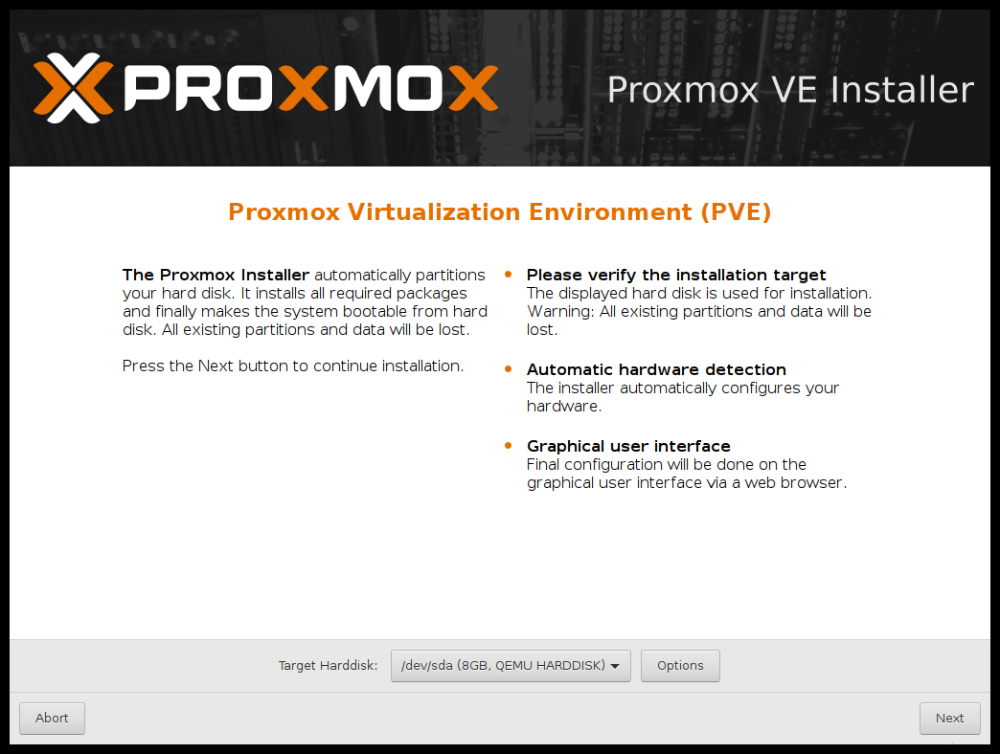
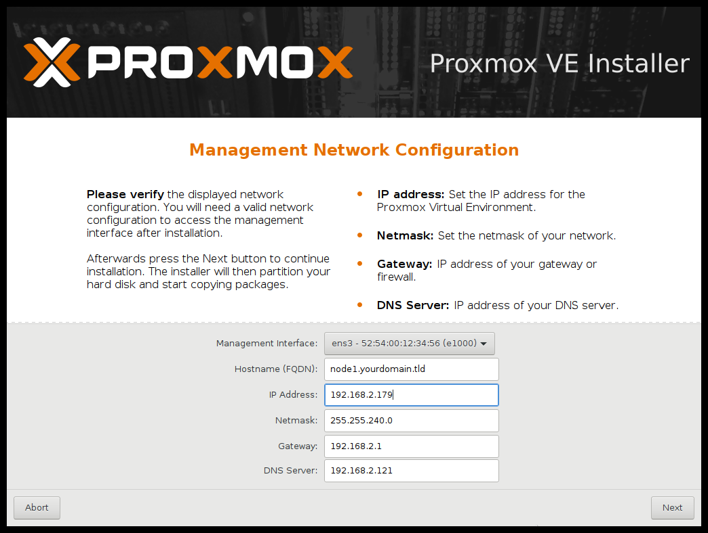
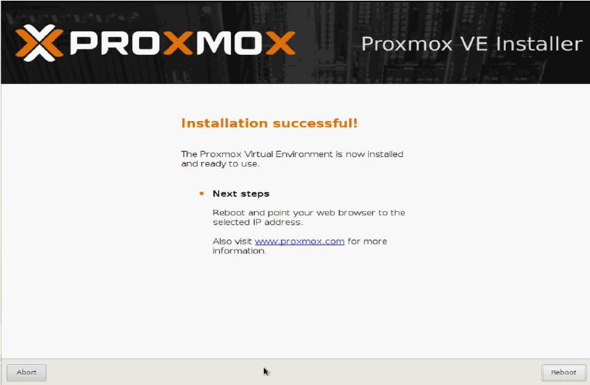
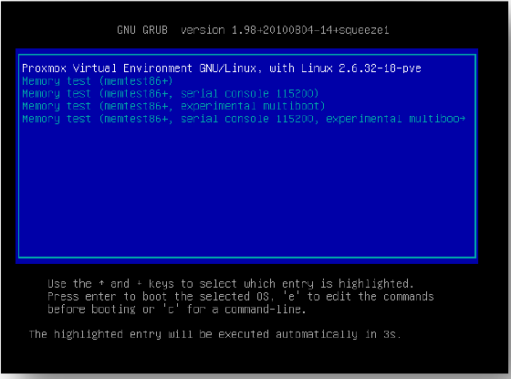
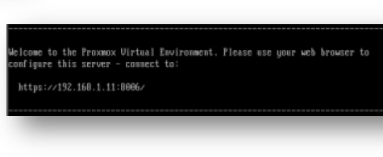
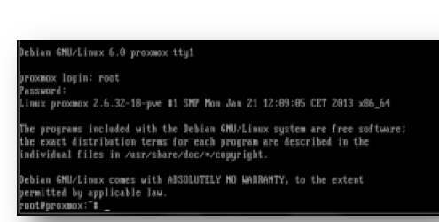

2.2 Proxmox VE¶
En este apartado
¿Qué es la virtualización y qué nos ofrece?¶
La virtualización es una forma de dividir lógicamente los recursos de un servidor para ejecutar diferentes aplicaciones.
Con el aumento de los costes de energía, mantener servidores físicos infrautilizados ya no es un lujo que podamos permitirnos. La virtualización nos permite hacer más con menos: ahorramos energía y dinero, y conseguimos un centro de datos virtual, limpio y sin fronteras geográficas.
El hipervisor¶
Un hipervisor es una pieza de software, hardware o firmware que crea y administra máquinas virtuales. Es el elemento básico de toda virtualización.
- Actúa como puente entre el hardware físico y las máquinas virtuales, creando una capa de abstracción.
- La máquina virtual no ve el hardware directamente: ve la capa del hipervisor, que es siempre la misma independientemente del hardware sobre el que esté instalado.
- Gracias a esto, una máquina virtual completa se puede mover a otro servidor, incluso a gran distancia a través de Internet, y funcionará exactamente igual que en local.
¿Qué es Proxmox?¶
Definición
Proxmox VE (Virtual Environment) es una potente plataforma de virtualización de nivel empresarial, 100 % libre y sin límites de uso.
- Ofrece soluciones similares a VMware vSphere, Microsoft Hyper-V o Citrix XenServer (la mayoría de pago), y en muchos escenarios incluye herramientas superiores.
- Integra de forma gratuita copias de seguridad, clúster, almacenamiento distribuido y muchas más soluciones.
- Se puede instalar en cualquier número de servidores físicos, sin límite de procesadores, sockets o conexiones de red, e integra almacenamiento NAS o SAN mediante Fibre Channel, iSCSI o NFS.
- Dispone de un servicio de actualizaciones con licencia comercial a un precio muy competitivo, recomendable para entornos de producción.
En su web oficial se puede descargar una imagen ISO para crear un instalador en CD o USB. La instalación se hace en un equipo vacío y en unos 15 minutos tenemos un servidor (nodo) listo para alojar máquinas virtuales o para unirse a un clúster.
Este tipo de instalación se llama bare-metal: el instalador añade al equipo todo lo necesario y lo deja preparado para un entorno de producción. Es decir, Proxmox es un hipervisor de tipo I.
¿Qué define la libertad de Proxmox?¶
- Usa Debian como sistema base y, para virtualizar, KVM (máquinas virtuales) y LXC (contenedores). Toda la base es libre, por eso el producto final también lo es.
- Su modelo de negocio se basa en formación, certificaciones, soporte y suscripciones para acceder a las últimas actualizaciones estables.
- Sin suscripción también se puede usar sin problema: tendremos actualizaciones menos profundas (reparaciones y mejoras de paquetes pequeños), igual de fiables pero menores a nivel del hipervisor.
- Para producción se recomienda la suscripción comercial, ya que garantiza máxima estabilidad y las últimas actualizaciones, aunque no es obligatoria.
¿Qué nos ofrece esta solución?¶
| Característica | Descripción |
|---|---|
| Administrador web HTML5 | Interfaz web para configurar servidores, clúster, MV, backups, restauraciones y snapshots. No hace falta instalar ningún cliente; funciona incluso desde el móvil o la tablet. |
| Soporte multi-SO | Virtualiza la mayoría de sistemas operativos de 32/64 bits: Linux, Windows (XP, 7, 8, 10, Server 2003–2016…), Solaris, AIX, etc. |
| KVM | Virtualización completa sobre Linux. Requiere un procesador con soporte Intel VT o AMD SVM. |
| Contenedores LXC | Ejecuta sistemas Linux en espacios aislados, haciendo uso directo del hardware del servidor. |
| Backup & Restore | Copias de seguridad inmediatas o programadas desde la web. Restaurar es tan fácil como elegir el backup. |
| Snapshot en vivo | Copias instantáneas de la MV (RAM, configuración y discos) para volver atrás en el tiempo. |
| Migración en caliente | Mover MV entre nodos sin apagarlas. |
| Clúster de alta disponibilidad | Reglas de HA, por ejemplo mover una MV a otro nodo con menos carga (balanceo de carga). |
| Administración centralizada | Un nodo actúa como orquestador, aunque cada nodo tiene su propia interfaz web. |
| Clúster sin SPOF | Sin punto único de fallo: si cae el orquestador, cualquier otro nodo tiene la información replicada y puede tomar el control. |
| Puentes de red | Las tarjetas físicas se gestionan mediante bridges compartidos con las MV. Se pueden agrupar varias tarjetas para balancear el tráfico. |
| NAS y SAN | Uso sencillo de almacenamiento por Fibre Channel, iSCSI o NFS. |
| Almacenamiento distribuido | Sistemas como Ceph o DRBD en cada nodo, con los datos replicados y tolerancia a fallos. |
| Autenticación | Cuentas propias de Proxmox o LDAP / Active Directory. |
| Firewall | Reglas para todas las MV o reglas específicas para una sola. |
Conceptos y funcionamiento¶
- Requisitos mínimos: un procesador con VT (Intel) o SVM (AMD) y un equipo vacío. La instalación bare-metal borra el disco por completo, instala Debian con todo lo necesario y configura KVM.
- Nodo: cada máquina con Proxmox se convierte en un nodo, que puede trabajar de forma independiente o formar parte de un clúster.
- Clúster: agrupar nodos permite la administración centralizada, mover máquinas entre nodos, activar la alta disponibilidad y aprovechar todos los recursos físicos.
- Almacenamiento compartido: para usar alta disponibilidad y migrar MV sin apagarlas es imprescindible un almacenamiento compartido (NAS o SAN) o distribuido (tipo Ceph). Hay muchas alternativas, tanto propietarias como libres (por ejemplo, FreeNAS/TrueNAS).
Importante
Sin almacenamiento compartido o distribuido no se pueden mover máquinas entre nodos ni usar alta disponibilidad.
Tecnologías: KVM y LXC¶
En Proxmox podemos usar dos tecnologías de virtualización. Elegiremos una u otra según nuestras necesidades.
KVM (Kernel-based Virtual Machine)¶
- Máquina virtual basada en el núcleo: solución de virtualización completa con Linux.
- Está formada por un módulo del kernel (incluido en Linux desde la versión 2.6.20) y por QEMU, que se ejecuta en el espacio de usuario y emula el hardware de la máquina.
- Ejecuta MV a partir de imágenes de disco con sistemas operativos sin modificar (Windows, Linux, BSD…).
- Cada MV tiene su propio hardware virtualizado: tarjeta de red, discos duros, tarjeta gráfica, etc.
- Con los controladores VirtIO (paravirtualizados), el disco y la red de la MV alcanzan un rendimiento cercano al nativo.
LXC (Linux Containers)¶
- Tecnología de virtualización a nivel de sistema operativo para Linux.
- No es un hipervisor ni emula hardware: usa funciones del propio kernel del anfitrión para aislar grupos de procesos.
- Permite que un servidor ejecute múltiples instancias aisladas de Linux, llamadas contenedores (CT en Proxmox).
- No crea una máquina virtual: crea un entorno con su propio espacio de procesos, de red y de ficheros, pero comparte el kernel del anfitrión.
- Se basa en los espacios de nombres (namespaces), que aíslan lo que ve cada contenedor, y en los cgroups, que limitan los recursos que puede consumir (CPU, memoria, E/S).
- Son contenedores de sistema: se comportan como un Linux completo, con sus propios servicios. Docker, en cambio, usa contenedores de aplicación, pensados para ejecutar un único servicio.
Comparativa KVM vs LXC¶
| KVM | LXC | |
|---|---|---|
| Tipo | Virtualización completa | Contenedores (nivel de SO) |
| Kernel | Cada MV tiene el suyo | Comparten el del anfitrión |
| Sistemas operativos | Cualquiera (Windows, Linux, BSD…) | Solo Linux |
| Rendimiento | Muy bueno | Casi nativo (más ligero) |
| Arranque | Decenas de segundos | Pocos segundos |
| Aislamiento | Total | Menor (comparten kernel) |
| Requiere VT-x/AMD-V | Sí | No |
| Uso típico | Servidores Windows, SO completos | Servicios Linux ligeros (web, DNS…) |
Requisitos hardware¶
| Componente | Recomendación |
|---|---|
| Procesador | De 64 bits (Intel o AMD), multinúcleo y con Intel VT-x o AMD-V activado en la BIOS/UEFI. |
| RAM | 2 GB como mínimo para Proxmox, más la memoria que se asigne a las MV y contenedores. En la práctica, 16 GB o más. |
| Discos | SSD para el sistema y las MV. En producción, varios discos con redundancia (RAID, ZFS o Ceph). |
| Red | Al menos 1 tarjeta Gigabit. En producción, varias para separar tráfico y tener redundancia (bonding). |
Instalación de Proxmox¶
Necesitamos un USB arrancable o un CD/DVD con la ISO de Proxmox.
BIOS
En algunos servidores es necesario cambiar algún parámetro de la BIOS para que sea compatible con los drivers de la instalación bare-metal (y, por supuesto, activar la virtualización VT/SVM).
1. Menú de arranque. Arrancamos desde el USB/DVD y elegimos Install Proxmox VE.

2. Licencia y disco de destino. Tras revisar el hardware, aceptamos la licencia y elegimos el disco donde se instalará el sistema.

Con el botón Options del Target Harddisk podemos elegir cómo se instala:
- Si la controladora no soporta RAID, podemos hacer RAID por software con ZFS (heredado de Solaris) en distintos niveles (RAID 1, 5, 10…).
- También podemos instalar en un disco simple, una tarjeta SD, etc.
Recomendación: RAID 1 para el sistema
Instalar el sistema en RAID 1 (por hardware o por software) permite seguir funcionando si falla un disco, sustituirlo y continuar. Los discos son baratos: con 70–128 GB en RAID 1 (SSD, SAS o SATA) basta para el sistema, y los discos más grandes se dejan para las MV o para el almacenamiento distribuido (Ceph, DRBD, GlusterFS…).
3. País, zona horaria y teclado.
4. Contraseña de root y correo electrónico para las notificaciones.
5. Configuración de red: interfaz de gestión, nombre del equipo (FQDN), IP, máscara, puerta de enlace y DNS.

Note
Apunta bien la IP que pongas aquí: es la que usarás para entrar a la interfaz web.
6. Instalación. El instalador copia y configura todo lo necesario.
7. Reinicio. Al terminar, reiniciamos el equipo.

8. GRUB. Al arrancar aparece el menú de GRUB. La opción resaltada es la que usaremos: si dejamos pasar el tiempo entra sola, o podemos pulsar Enter.

9. Mensaje de bienvenida. Antes de iniciar sesión, la consola muestra la URL para acceder a la interfaz web, con la IP que configuramos en el paso 5.

Acceso web
La dirección tiene el formato https://IP:8006 (por ejemplo https://192.168.1.11:8006). El navegador avisará de que el certificado no es de confianza; es normal, porque es autofirmado.
10. Inicio de sesión. Entramos con el usuario root y la contraseña del paso 4. ¡Ya tenemos Proxmox funcionando!

Actualización a la última versión¶
Actualizar Proxmox periódicamente nos asegura un software estable, sin fallos de seguridad y lo más optimizado posible.
¿Cuál es el proceso de actualización?¶
Como Proxmox está instalado sobre Debian GNU/Linux, basta con ejecutar:
apt-get update
apt-get dist-upgrade
Esto actualiza todo el sistema: nuevas versiones de Proxmox, el kernel (que es especial para Proxmox) y cualquier paquete pendiente. El sistema de paquetes de Debian resuelve las dependencias, así que podemos actualizar sin miedo a provocar fallos críticos.
¿Cada cuánto tiempo se debe actualizar?¶
- Como mínimo una vez al mes, para aplicar las nuevas versiones de Proxmox.
- Además, siempre que se publique un fallo de seguridad grave.
Actualizaciones automáticas
Aunque en entornos con muchos servidores es habitual automatizar las actualizaciones, no se recomienda en Proxmox: las actualizaciones (sobre todo las del kernel) pueden dar problemas.
¿Cuándo pasar a una nueva versión de Proxmox?¶
Cada cierto tiempo sale una versión mayor, con cambios importantes (nueva interfaz web, nueva API…).
- No actualices en cuanto sale. Espera un tiempo prudencial a ver la experiencia de los primeros usuarios.
- Si quieres probar las novedades, instálala en un servidor de pruebas, nunca directamente en producción.
¿Qué hay que tener en cuenta al actualizar?¶
- Especial cuidado con las actualizaciones del kernel: en el pasado han provocado fallos de arranque, un problema grave si gestionamos el servidor en remoto.
- Reinicia el servidor tras actualizar el kernel, de forma controlada (por ejemplo, de noche, para no afectar a los usuarios).
- Si algo falla, podemos arrancar con el kernel anterior: los kernels antiguos no se borran, se quedan "aparcados".
Actualizar sin suscripción¶
Si no tenemos soporte comercial, hay que cambiar los repositorios para evitar los errores de "no subscription":
-
En
/etc/apt/sources.list.d/pve-enterprise.list, comentamos la línea del repositorio de pago:#deb https://enterprise.proxmox.com/debian/pve stretch pve-enterprise -
En
/etc/apt/sources.list.d/pve-no-subscription.list, quitamos la#de la línea del repositorio gratuito:deb http://download.proxmox.com/debian/pve stretch pve-no-subscription -
Descargamos las claves públicas del repositorio:
wget -O- http://download.proxmox.com/debian/key.asc | apt-key add -
Nota actualizada
Los ejemplos anteriores son de Proxmox VE 5 (Debian stretch). En versiones actuales cambia el nombre de la versión de Debian (por ejemplo, bookworm en Proxmox VE 8) y el formato de algunos archivos, y apt-key está obsoleto. La forma más sencilla hoy es ir a Nodo → Updates → Repositories en la interfaz web, desactivar el repositorio enterprise y añadir el No-Subscription con el botón Add.
Estructura de archivos y directorios¶
Tras la instalación, Proxmox crea una estructura de directorios que conviene conocer para gestionar el sistema.
| Directorio | Uso |
|---|---|
/etc/pve |
Configuración del sistema de virtualización |
/var/log/pve* |
Archivos de log |
/usr/share/doc/pve-* |
Documentación sobre Proxmox |
/usr/share/pve-manager |
Archivos de la interfaz web |
/var/lib/rrdcached/ |
Información MRTG para las gráficas |
/usr/share/qemu-server/ |
Configuraciones de USB para KVM |
/etc/pve — Configuración
Contiene los archivos de configuración del host: la de la interfaz web (usuarios, permisos…) y la de cada máquina virtual o contenedor.
| Archivo / directorio | Contenido |
|---|---|
datacenter.cfg |
Configuración general del nodo / centro de datos |
nodes/ |
Directorio con los nodos del clúster |
local |
Enlace al directorio del nodo local |
qemu-server |
Enlace a los archivos de configuración de las MV KVM |
lxc |
Enlace a los archivos de configuración de los contenedores LXC |
storage.cfg |
Almacenamientos creados |
user.cfg |
Usuarios autorizados en la web |
.version |
Versiones de modificación de los archivos de configuración |
vzdump.cron |
Crontab con la programación de las copias de seguridad |
/var/log/pve* — Logs
Todos los registros del servidor están en /var/log:
pveam.log: registro general, primer sitio donde buscar fallos.pve-firewall.log*: estado y mensajes importantes del cortafuegos integrado.pveproxy/: accesos al proxy de Proxmox, es decir, a la interfaz web.pve/: registros de las tareas realizadas por el sistema.
/usr/share/doc/*pve* — Documentación
Documentación de los paquetes instalados. Suele incluir los últimos cambios, detalles técnicos y ejemplos que aún no están en el manual o en las páginas man.
/usr/share/pve-manager — Interfaz web
Archivos de la interfaz web de Proxmox. Se pueden modificar, pero no se recomienda: las actualizaciones pueden sobrescribirlos sin previo aviso.
/var/lib/rrdcached/ — Gráficas
Estadísticas de uso del servidor, las MV, los volúmenes, etc. (información MRTG), con las que se generan las gráficas de rendimiento.
/usr/share/qemu-server — USB en KVM
Archivos de configuración para dispositivos USB en KVM.
📌 Resumen¶
| Término | Definición |
|---|---|
| Proxmox VE | Plataforma de virtualización libre, tipo I (bare-metal), basada en Debian. |
| Nodo | Cada servidor físico con Proxmox instalado. |
| Clúster | Grupo de nodos con administración centralizada, migración de MV y alta disponibilidad. |
| KVM | Virtualización completa: cada MV tiene su propio kernel y hardware virtual. |
| LXC | Contenedores Linux que comparten el kernel del anfitrión. |
| HA | Alta disponibilidad: las MV se mueven a otro nodo si uno falla. Requiere almacenamiento compartido. |
| Ceph / DRBD | Sistemas de almacenamiento distribuido y replicado entre nodos. |
| Puerto 8006 | Puerto de la interfaz web: https://IP:8006. |